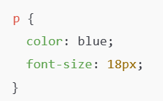
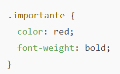
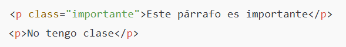
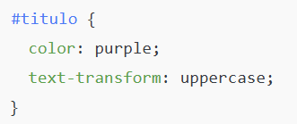
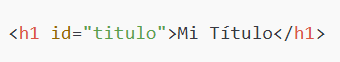
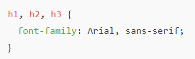
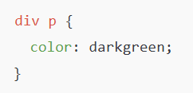
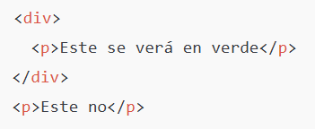
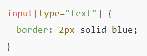
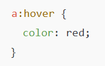

1. Selector de etiqueta
css
2. Selector de clase
css
html
3. Selector ID
css
html
4. Selector de agrupación
Aplicar el mismo estilo a varias etiquetas
css
5. Selectores descendientes
Afecta solo a los elementos que están dentro de otros.
css
html
6. Selector por atributo
Puedes seleccionar según el valor de un atributo.
css
7. Selectores de pseudo-clases
Sirven para estados especiales de los elementos.
css
